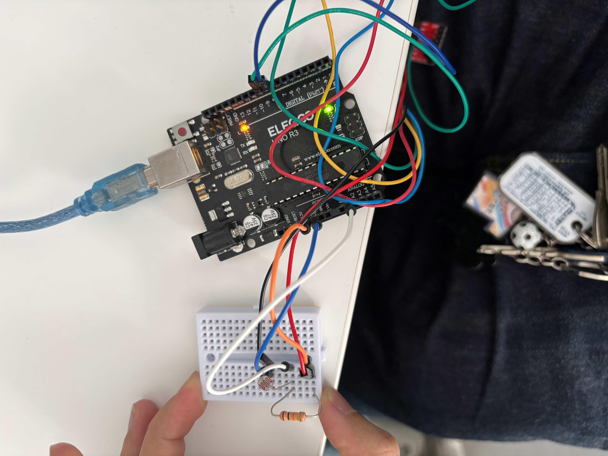

TDL対USJでの社会風刺 CdSとステッピングモーターを組み合わせて明るい状態では動きが止まり、暗い状態だと動く仕様にした。 表面上では争わないが裏ではお互いバチバチな様子を表してみた。（※実際バチバチとは限らない）
明るさセンサーの値（200）を読み取り、一定の値より暗い場合にモーターが動作する。 モーターは一定角度だけ回転し、左右に往復運動を行う。
const int DIR = 8;
const int STEP = 9;
int stepsPerRevolution = 200;
int threshold = 200;
void setup() {
pinMode(DIR, OUTPUT);
pinMode(STEP, OUTPUT);
Serial.begin(9600);
}
void loop() {
int val = analogRead(1);
Serial.println(val);
if (val > threshold) {
// 暗い → 往復ビンタ
rotateAngle(90, HIGH); // 右
delay(10);
rotateAngle(90, LOW); // 左
delay(10);
} else {
// 明るい → 停止
digitalWrite(STEP, LOW);
}
}
void rotateAngle(float angle, int direction) {
int steps = stepsPerRevolution * angle / 360;
digitalWrite(DIR, direction);
for (int i = 0; i < steps; i++) {
digitalWrite(STEP, HIGH);
delayMicroseconds(1000);
digitalWrite(STEP, LOW);
delayMicroseconds(delaytime);
}
}
